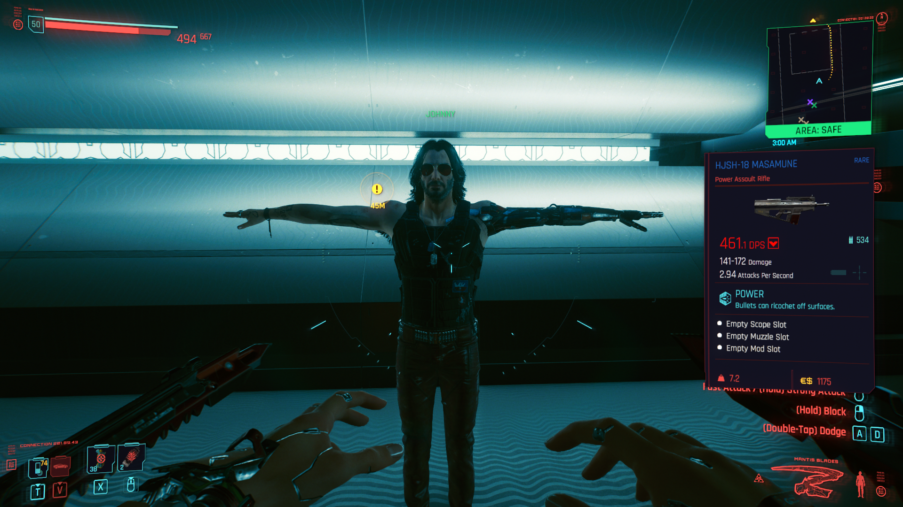

| Inicio | Loja | Sobre |
postado em 45/21/1000 A.C - 18:onibus
Bugs, renderização de má qualidade e quedas constantes prejudicam bastante a imersão do aguardado RPG da CD Projekt Red
Cyberpunk 2077 chegou ao mercado no dia 10 de dezembro de 2020, oito anos depois de seu primeiro anúncio. O jogo, que era um dos mais aguardados, decepcionou bastante logo em seu lançamento, marcado por inúmeros bugs, fechamentos inesperados e baixa performance gráfica nos consoles de geração passada, PlayStation 4 (PS4) e Xbox One. Em menos de duas semanas, o título foi retirado por tempo indeterminado da loja virtual da Sony, fazendo com que a CD Projekt Red (CDPR), sua desenvolvedora, pedisse desculpas públicas.
Cyberpunk 2077 já vendeu 13 milhões de cópias mesmo com bugs e polêmicas
Embora frustrante em diversos aspectos, por baixo de tantas imperfeições há definitivamente um bom enredo em Cyberpunk 2077, com um enorme potencial reflexivo, exploratório e imersivo. Vale dizer que o game está disponível, também, para PlayStation 5 (PS5), Xbox Series S/X e PC (via Steam), em versões otimizadas.